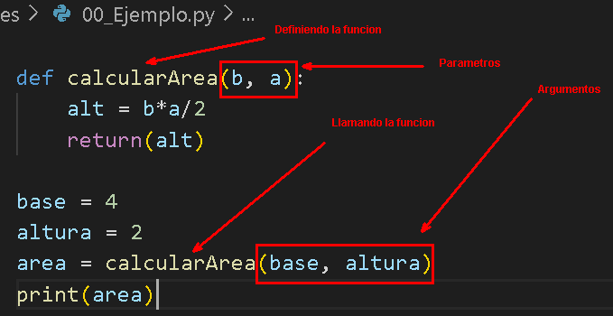
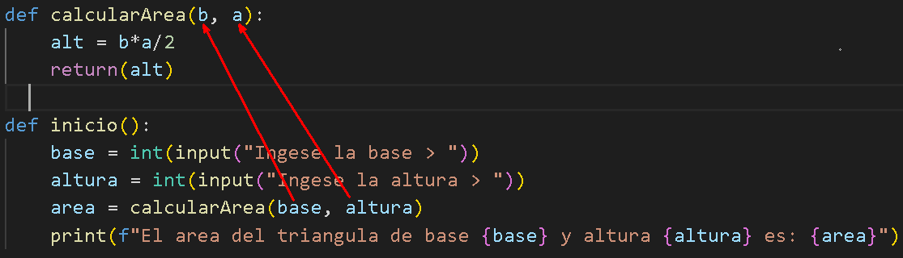

Funciones
Programación estructurada
La programación estructurada es un paradigma de programación basado en utilizar funciones o subrutinas, y únicamente tres estructuras de control:
-
secuencia: ejecución de una sentencia tras otra.
-
selección o condicional: ejecución de una sentencia o conjunto de sentencias, según el valor de una variable booleana.
-
iteración (ciclo o bucle): ejecución de una sentencia o conjunto de sentencias, mientras una variable booleana sea verdadera.
Ventajas del paradigma de Programacion Estructurada
Entre las ventajas de la programación estructurada sobre el modelo anterior (hoy llamado despectivamente código espagueti), cabe citar las siguientes:
-
La estructura de los programas es clara, puesto que las sentencias están más ligadas o relacionadas entre sí.
-
Se optimiza el esfuerzo en las fases de pruebas y depuración. El seguimiento de los fallos o errores del programa (debugging), y con él su detección y corrección, se facilita enormemente.
-
Se reducen los costos de mantenimiento. Análogamente a la depuración, durante la fase de mantenimiento, modificar o extender los programas resulta más fácil.
-
Los programas son más sencillos y más rápidos de confeccionar.
-
Se incrementa el rendimiento de los programadores.
Definición
Una función es un bloque de código con un nombre asociado, que recibe cero o más argumentos como entrada, sigue una secuencia de sentencias, la cuales ejecuta una operación deseada y devuelve un valor y/o realiza una tarea, este bloque puede ser llamados cuando se necesite.
El uso de funciones es un componente muy importante del paradigma de la programación llamada estructurada, y tiene varias ventajas:
-
modularización: permite segmentar un programa complejo en una serie de partes o módulos más simples, facilitando así la programación y el depurado.
-
reutilización: permite reutilizar una misma función en distintos programas.
Python dispone de una serie de funciones integradas al lenguaje, y también permite crear funciones definidas por el usuario para ser usadas en su propios programas.
Muy a pesar que Python no tiene un punto de inicio, para aplicar la programacio estructurada, utilizaremos la siguiente forma que nos permite estructurar un programa en este lenguaje.
def calcularArea(b, a):
alt = b*a/2
return(alt)
def inicio():
base = int(input("Ingese la base > "))
altura = int(input("Ingese la altura > "))
area = calcularArea(base, altura)
print(f"El area del triangula de base {base} y altura {altura} es: {area}")
if __name__ == "__main__":
inicio()
En este bloque de codigo, el programa inicia en la funciona llamada inicio(). Luego va hasta la funcion def inicio() y ejecuta las lineas de dicha funcion.
Sentencia def
La sentencia def es una definición de función usada para crear objetos funciones definidas por el usuario.
Una definición de función es una sentencia ejecutable. Su ejecución enlaza el nombre de la función en el namespace local actual a un objecto función (un envoltorio alrededor del código ejecutable para la función). Este objeto función contiene una referencia al namespace local global como el namespace global para ser usado cuando la función es llamada.
La definición de función no ejecuta el cuerpo de la función; esto es ejecutado solamente cuando la función es llamada.
La sintaxis para una definición de función en Python es:
Definicion de funcion sin parametros
def calcularArea():
b = 4
a = 2
alt = b*a/2
print(alt)
calcularArea()
Definicion de funcion con parametros
Este tipo de funciones es obligatorio utilizar la palabra reservada return(valor), de lo contrario genera un error.
def calcularArea(b, a):
alt = b*a/2
return(alt)
base = 4
altura = 2
area = calcularArea(base, altura)
print(area)

Argumentos y parámetros
Al definir una función los valores los cuales se reciben se denominan parámetros, pero durante la llamada los valores que se envían se denominan argumentos.
Por Posicion
Cuando enviá argumentos a una función, estos se reciben por orden en los parámetros definidos. Se dice por tanto que son argumentos por posición:

En esta imagen observamos que el valor contenido en la variable \<base>, se almacena en la variable \<b> y el contenido de la variable \<altura>, se almacena en la variable \<a>.
Por nombre
Sin embargo es posible evadir el orden de los parámetros si indica durante la llamada que valor tiene cada parámetro a partir de su nombre:
def calcularArea(b, a):
alt = b*a/2
return(alt)
base = 4
altura = 2
area = calcularArea(a = altura, b = base)
print(area)
Parámetros por defecto
def calcularArea(b=None, a=None):
if a == None or b == None:
print ("Error, debes enviar dos números a la función")
return
else:
alt = b*a/2
return(alt)
base = 4
altura = 2
area = calcularArea(base, altura)
print(area)
area = calcularArea()
print(area)
Podemos llamar de dos formas a la funcion calcularArea. Una sin argumentos calcularArea( ), para este caso b y a toman los valores de None y otra con argumentos calcularArea(base, altura), para este caso b y a toman los valores de base y altura respectivamente.
Argumentos indeterminados
En alguna ocasión usted no sabe previamente cuantos elementos necesita enviar a una función. En estos casos puede utilizar los parámetros indeterminados por posición y por nombre.
Por posición
Usted debe crear una lista dinámica de argumentos, es decir, un tipo tupla, definiendo el parámetro con un asterisco, para recibir los parámetros indeterminados por posición:
def mostrarLista(*args):
for arg in args:
print(arg)
mostrarLista(5, [2,4, True], "Universidad")
Por nombre
Para recibir un número indeterminado de parámetros por nombre (clave-valor o en inglés keyword args), usted debe crear un diccionario dinámico de argumentos definiendo el parámetro con dos asteriscos:
def indeterminados_nombre(**kwargs):
print (kwargs)
indeterminados_nombre(n=5, c="Hola Plone", l=[1,2,3,4,5])
otra forma:
def indeterminados_nombre1(**kwargs):
for kwarg in kwargs:
print(f"{kwarg} => {kwargs[kwarg]}")
indeterminados_nombre1(n=5, c="Hola Plone", l=[1,2,3,4,5])
Muestra un diccionario con las claves y sus respectivos valores.
Por posición y nombre
Si requiere aceptar ambos tipos de parámetros simultáneamente en una función, entonces debe crear ambas colecciones dinámicas. Primero los argumentos indeterminados por valor y luego los cuales son por clave y valor:
def indeterminados_nombre_posicion(*args,**kwargs):
for arg in args:
print(arg)
for kwarg in kwargs:
print(f"{kwarg} => {kwargs[kwarg]}")
indeterminados_nombre_posicion(50, -1, 1.56, 10, 20, 300, cms="Universidad", edad=38)
Funciones avanzadas
Funciones anónimas
Una función anónima, como su nombre indica es una función sin nombre. Es decir, es posible ejecutar una función sin referenciar un nombre, en Python puede ejecutar una función sin definirla con def.
Ejemplo funcion con def
def calcularArea(b, a):
alt = b*a/2
return(alt)
base = 4
altura = 2
area = calcularArea(a = altura, b = base)
print(area)
Ejemplo con Lambda
area = lambda b, a: (b*a/2 )
print(area(4,2))
Modulos en Python
Un módulo le permite a usted organizar lógicamente su código Python. Agrupando código relacionado dentro de un módulo hace el código mas fácil de entender y usar. Un módulo es un objeto de Python con atributos con nombres arbitrarios que puede enlazar y hacer referencia.
Simplemente, un módulo es no es otra cosa sino un archivo con extensión .py. Un módulo puede definir funciones, clases y variables, también puede incluir código ejecutable.
Tenemos el siguiente ejemplo:
def calcularArea(b, a):
alt = b*a/2
return(alt)
def inicio():
base = int(input("Ingese la base > "))
altura = int(input("Ingese la altura > "))
area = calcularArea(base, altura)
print(f"El area del triangula de base {base} y altura {altura} es: {area}")
if __name__ == "__main__":
inicio()
Hasta este momento la programacion estructurada está bien, sin embargo podemos modularizar el programa de la siguiente manera.
La función calcularArea(), la colocaremos en un archivo diferente llamado funciones.py, dentro de una carpeta llamada library.
Es importante que si se utiliza carpetas distintas del programa principal es necesario crear un archivo en blanco llamado __init__.py
Entonces nos quedarían dos archivos en la carpeta library:
__init__.py
funciones.py
Codigo de la funciones.py
from library.funciones import calcularArea
def inicio():
base = int(input("Ingese la base > "))
altura = int(input("Ingese la altura > "))
area = calcularArea(base, altura)
print(f"El area del triangula de base {base} y altura {altura} es: {area}")
if __name__ == "__main__":
inicio()
Notese que la función calcularArea( ), en principio no existe porque en el archivo no se ve. Sin embargo en la primera linea se encuentra
from library.funciones import calcularArea
que importa el archivo funciones.py que se encuentra dentro de la carpeta library. (No se incluye la extensión .py
archivo funciones.py
def calcularArea(b, a):
alt = b*a/2
return(alt)
Actividad
- Generar un menu, con N opciones, combinando diccionarios con tuplas y listas, que permita colocar el valor de la opción, la descripcion de opción y el nombre de al función que ejecutaria dicha opción.